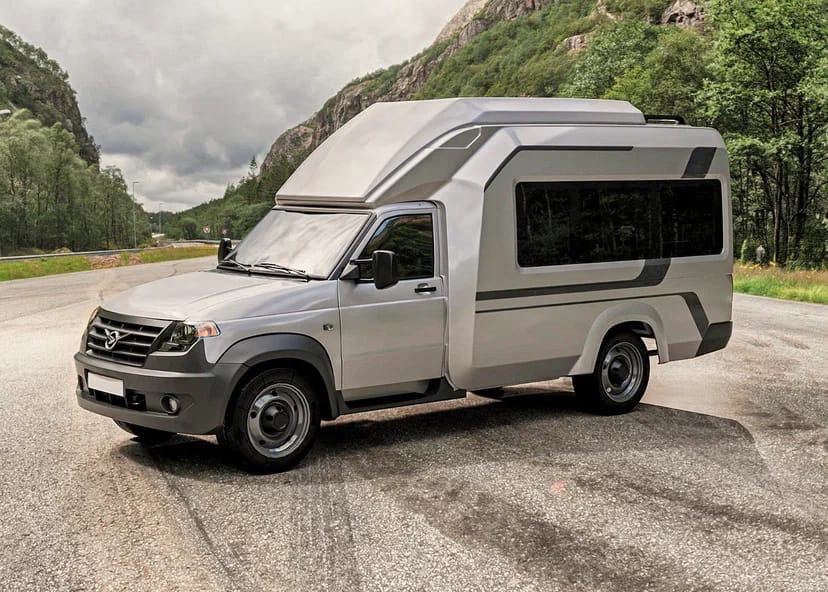
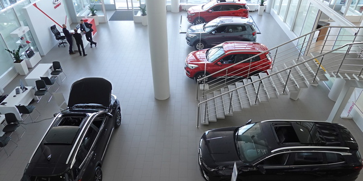

В 00-ых мы постоянно сталкивались с проблемами с арендой автомобилей. Но однажды, собравшись компанией друзей за кружкой кваса, мы решили: "Раз рынок не может дать нам то, что нужно, мы сделаем это сами". Так зародилась наша компания. От классических объялений в газетах, до крупнейшего сайта по аренде автомобилей.
От отечественной классики до премиального Lamborghini. Передвигайтесь со вкусом благодаря широкому выбору предложений по аренде автомобилей!
Представленные машины застрахованы на все случаи жизни — вам нечего бояться, вы не переплатите ни копейки!
Миллионы довольных клиентов развеют все ваши сомнения! Вы на верном пути!
Новости
По цене эксклюзива: Volkswagen Golf подорожал до 4,5 млн рублей
Стоимость автомобилей стабилизировалась, но есть исключения
Цены на автомобили перестали меняться с головокружительной скоростью, и, по данным агентства «Автостат», во второй половине апреля 2022 года лишь три марки переписали прайс-листы — это Volkswagen, Subaru и Opel. Но стоимость автомобилей всё равно остается рекордной, а темпы последнего скачка впечатляют. Означает ли это, что пора привыкать к новым ценам или есть шанс на снижение?
Прайс-листы Volkswagen оттаяли
Немецкая марка еще в марте 2022 года остановила поставки машин в Россию и работу заводов в Калуге и Нижнем Новгороде, но прайс-листы не меняла. Неопределенность с поставками спровоцировала дилеров назначать цену самостоятельно, что привело к парадоксам вроде Volkswagen Tiguan за 8,5 миллиона рублей, который в течение апреля подешевел до 5 миллионов. При этом официальная стоимость автомобиля не менялась, и самые дорогие комплектации по старому прайсу стоили в районе 3,5 миллиона рублей.
Во второй половине апреля Volkswagen скорректировал прайс-листы впервые с начала спецоперации, и наценки впечатляют: например, Tiguan подорожал на 1,2–1,4 миллиона рублей и стоит теперь в диапазоне от 3,376 миллиона до 4,746 миллиона рублей. Это самое сильное увеличение рублевой цены за всю историю присутствия марки на российском рынке.
Более полумиллиона прибавил Volkswagen Polo, который стоит минимум 1,623 миллиона рублей. Компактный кроссовер Taos подорожал в полтора раза: цена начинается от 2,8 миллиона рублей. За Terramont попросят как минимум 6 миллионов рублей, за Touareg — не менее 8,6 миллиона рублей.
Но еще больше шокирует стоимость компактного хетчбэка Volkswagen Golf, за который придется отдать минимум 4,3 миллиона рублей. Справедливости ради, его цена поражала воображение и год назад, но тогда он стоил хотя бы 2,5 миллиона.
Это остаточный рост цен
Эксперты агентства «Автостат» подчеркивают, что в целом масштабы подорожания снизились, и если в первой половине апреля прайс-листы изменились у 11 марок, то теперь только у трех, при этом у Subaru и Opel — не слишком сильно. Ряд марок вообще не меняли официальную стоимость машин в апреле, например, Chery, KIA и Mitsubishi. А часть брендов и вовсе сохранила прайс-листы с момента начала спецоперации, среди них — Audi, Geely, Land Rover, Mercedes-Benz, MINI, Porsche, Skoda и Volvo.
Это однако не означает, что такие машины можно купить по старым ценам: во многих случаях поставки остановлены, а цены на оставшиеся экземпляры формируются самим дилером с учетом его ожиданий. В числе прочего это приводит к конфликтам с клиентами, частично оплатившими автомобиль до начала спецоперации. Есть прецеденты, когда уже забронированную машину выставляли с увеличенной на 6 миллионов рублей ценой.
Есть ли шанс, что цены упадут?
Хотя ажиотаж несколько спал, цены зафиксировались на невиданном ранее уровне. Например, самая дешевая модель Lada Granta стоит как минимум 728 тысяч рублей, Hyundai Solaris — от 1,4 миллиона рублей, самая дешевая Toyota Corolla — почти 2 миллиона рублей, а Nissan Qashqai — от 2,3 миллиона.
Идеальный автомобиль для путешествий по России? УАЗ показал автодом на шасси грузовичка «Профи», и скоро такое авто можно будет заказать

УАЗ обещает, что скоро новинка станет доступна для заказа у официальных дилеров компании
УАЗ совместно с компанией «Автодом» показала изображения серийного автодома на шасси грузовичка «Профи». Слухи об этом авто ходили давно, но сейчас продемонстрировано серийное облачение кемпера. УАЗ обещает скоро начать продажи — заказать авто можно будет у официального дилера.
Уже в базовом исполнении такой автодом получит стеклопластиковый кузов с полноценными местами для сна, электроподготовку 220В, отопитель и кондиционер. Также в стандартное оснащение войдёт комплект мебели, включающий в себя портативный кухонный модуль, шкаф, санитарный модуль с душевым поддоном и пол, подготовленный для установки уникального дивана-трансформера, который можно превращать в удобную кровать длиной 1850 миллиметров. Опционально кемпер можно будет дооснастить 40-литровой холодильной камерой, небольшой газовой плиткой, биотуалетом и системой водоснабжения с погружным насосом.
Цена не называется, но это и понятно. Во-первых, она будет зависеть от типа привода (задний или полный), во-вторых, на стоимость сильно влияют заказные и опциональные позиции.
Апрельские продажи авто упали почти в 3 раза

В апреле по сравнению с мартом продажи новых легковых автомобилей упали в 2,9 раза
До 27,2 тыс. машин, следует из расчетов "Коммерсанта" на основании данных "Автостата". Аналитическое агентство ориентируется на информацию АО "Электронный паспорт" - то есть фактически речь идет о регистрациях автомобилей. Данные о продажах автоконцернов будут раскрыты в статистике Ассоциации европейского бизнеса (АЕБ).
В марте данные АЕБ и "Автостата" довольно сильно расходились, в позапрошлом месяце было продано 55,1 тыс. легковых и легких коммерческих авто (падение на 63% год к году), при этом зарегистрировано 78,9 тыс. только легковых. Но в статистике АЕБ за отдельные месяцы не отражены продажи BMW и Mercedes-Benz, которые отчитываются только поквартально. Кроме того, в недельной статистике "Автостата" выпадают даты 1-3 апреля и учитывается 1 мая.
Согласно данным "Автостата", спрос на автомобили к концу апреля начал активизироваться. Так, в последнюю неделю месяца, с 25 апреля по 1 мая, объем зарегистрированных автомобилей вырос по сравнению с предыдущей неделей на 17% - до 7,7 тыс. машин. Рост наблюдался и на неделе, завершившейся 24 апреля (на 19%, до 6,6 тыс. штук). В дилере "Автодом" отметили снижение трафика автосалонов в апреле примерно на 70% по сравнению с мартом.
Результаты апреля значительно меньше предыдущих месяцев, когда в среднем за неделю продавалось более 15 тыс. машин в марте и более 20 тыс. машин в январе-феврале.
На сегодня большинство иностранных компаний, кроме китайских, официально объявили о приостановке продаж и производства в России. Традиционно отечественные автозаводы также сталкиваются с проблемами с выпуском из-за недопоставок компонентов. При этом спрос на автомобили начал активно сокращаться со второй половины марта.
Как считает Сергей Удалов из "Автостата", чтобы клиенты массово пошли в автосалоны, необходимо некое изменение ситуации или резкое падение цен.